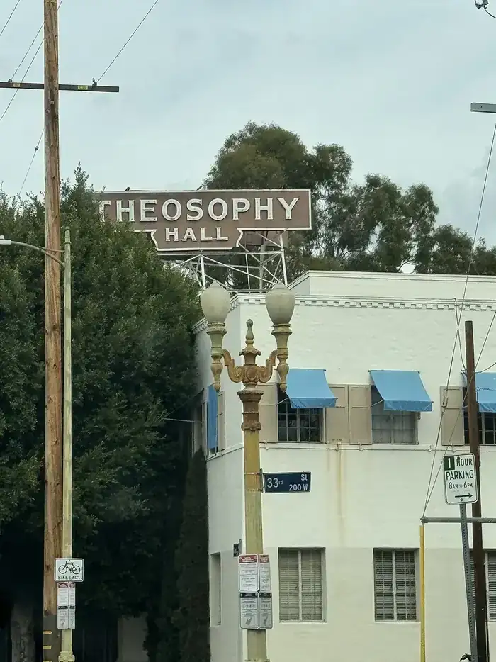

The claim
The Akashic records come from Theosophy. Helena Blavatsky and later writers described an 'akasha' — a subtle ether — in which every event, thought and intention is inscribed, and which a sufficiently trained person can read. The idea was elaborated by later Theosophists and has since spread into a large popular literature.
Maps, diagrams and images



The structure is familiar from other esoteric systems: a hidden medium, universal content, and access restricted to those with the right training. It is not a claim that can be checked by anyone who lacks the training, which is the first warning.
Why it fails as a claim
There is no proposed mechanism, no physical medium, and no way to distinguish a genuine reading from imagination, memory or cold reading. The strongest apparent evidence — a practitioner producing a correct detail — is exactly what a plausible guess plus feedback produces, and the misses are not recorded.
The concept is also unfalsifiable by construction: if a reading is wrong, the reading was faulty, not the records.
Documented: the concept, its Theosophical origin, and its cultural influence.
Not documented: any medium, any mechanism, any verified reading.
Not testable: as usually stated — wrong readings are attributed to the reader.
The pattern: an unfalsifiable claim with an inbuilt excuse, which the archive files as fringe.
Note: the archive does not claim the records are false. It claims nothing about them can be checked.
Why it is in the archive
Because it is the purest example of a claim designed so that evidence cannot touch it, and because the archive's four labels need a place for exactly that: not debunked, not documented, but beyond the reach of testing.
Open resources on this topic
- BookBOAT 267 THE AKASHIC RECORDS — EVER CHAYNJ AND EVOKARA · 2026 (Internet Archive, free to read)
- BookEdgar Cayce on the Akashic records : the book of life — Todeschi, Kevin J · 1998 (Internet Archive, free to read)
- BookThe aquarian gospel of Jesus the Christ : the philosophic and practical basis of the religion of the aquarian — Levi, 1844-1911 · 1985 (Internet Archive, free to read)
- PapersOpen-access articles: DOAJ · PubMed Central · Internet Archive Scholar
- BooksPublic-domain and borrowable copies: Open Library · Project Gutenberg · Google Books
Cite this page
Momin, S. (2026). The Akashic Records. The Larger World Archive. https://drsamonline.github.io/LARGE_GLOBE/akashic-records.htmlMomin, Sohil. “The Akashic Records.” The Larger World Archive, 2026, https://drsamonline.github.io/LARGE_GLOBE/akashic-records.html.Momin, Sohil. “The Akashic Records.” The Larger World Archive, 2026. https://drsamonline.github.io/LARGE_GLOBE/akashic-records.html.@misc{the2026akashic,
author = {Momin, Sohil},
title = {The Akashic Records},
year = {2026},
howpublished = {The Larger World Archive},
url = {https://drsamonline.github.io/LARGE_GLOBE/akashic-records.html},
note = {Last reviewed 20 November 2026}
}Last reviewed 20 November 2026 · Corrections policy · this page is not peer reviewed
Sources for this page
- Wikipedia, “Akashic records” — the concept and its originsen.wikipedia.org
- Wikipedia, “Theosophy” — the movement that produced iten.wikipedia.org
- Wikipedia, “Falsifiability” — the standard the claim failsen.wikipedia.org
- Wikipedia, “Cold reading” — the technique that mimics iten.wikipedia.org